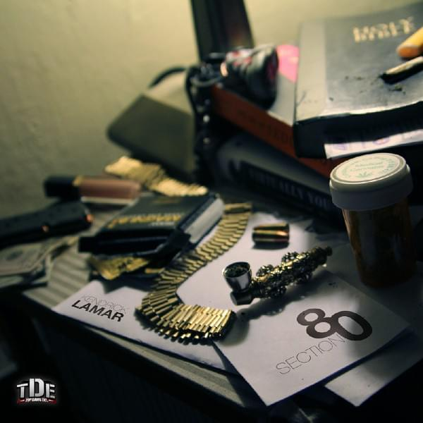

Home
Page 1
Page 2
Kendrick Lamar the greatest musican of our time
Rise to Fame
Duckworth grew up in Compton's high-crime district, where his parents had migrated to escape a violent environment in Chicago. He began writing rhymes as a teenager, and under the name K. Dot, he published his first mixtape, Youngest Head N word in Charge (2003). Anthony Tiffith, the head of the newly created record label Top Dawg Entertainment, was captivated by the musician's music and signed him. Before releasing Overly Dedicated (2010) as Kendrick Lamar, Duckworth released two more mixtapes as K. Dot: Training Day (2005) and C4 (2009). He became a popular guest performer on other rappers' records and formed the Black Hippy hip-hop collective with fellow Top Dawg musicians Ab-Soul, Jay Rock, and ScHoolboy Q. In 2011 Top Dawg made Lamar's album Section.80 available on iTunes, and at a concert later that year, legendary rap artists Game, Snoop Dogg, and Dr. Dre formally proclaimed Lamar the "new king of the West Coast." Lamar signed with Dr. Dre's label Aftermath Entertainment in 2012 and released his first album, good kid, m.A.A.d. City, which debuted at number two on the Billboard 200 chart and featured the R&B/hip-hop singles "Swimming Pools (Drank)" and "Poetic Justice." It was described as a concept album with an autobiographical story by critics. Lamar was nominated for seven Grammy Awards in 2013, but did not win any of them, including best album and best new artist. His track I won the prizes for best rap song and best rap performance the following year.
Early life
Lamar's parents arrived from Chicago three years before Kendrick was born, in 1984. His father, Kenny Duckworth, was allegedly involved with the Gangster Disciples, a South Side street gang, so his mother, Paula Oliver, made an ultimatum. 'I can't f with you if you ain't trying to better yourself,' she stated, according to Lamar. "'We can't stay on the streets indefinitely.'" They packed their belongings into two black garbage bags and took a train to California with $500 in their pockets. Lamar replies, "They were going to San Bernardino." "However, my Aunt Tina was still in Compton." She arranged for them to stay in a hotel until they could get back on their feet, and my mother obtained a job at McDonald's." They slept in their car for the first couple of years When it was hot enough, I would sleep in my car or motels, or in the park." They eventually saved enough money to acquire their first apartment, which is when I was born. Lamar has many fond childhood memories of Compton, like riding bikes, doing back flips off friends' roofs, and sneaking into his parents' living room during parties. ("I'd catch him with his shirt off in the middle of the dance floor," his mother says.) "Like, 'What the hell...?'" Return to that room!' ") Then there's the afternoon of April 29th, 1992, the first day of the South Central riots, which is one of his earliest memories.
Discography
Section.80

Section.80 is the debut studio album by American rapper Kendrick Lamar. It was released on July 2, 2011
Good Kid, M.A.A.D City

Good Kid, M.A.A.D City is the second studio album by American rapper Kendrick Lamar. It was released on October 22, 2012
To Pimp a Butterfly

To Pimp a Butterfly is the third studio album by American rapper Kendrick Lamar. It was released on March 15, 2015
Damn

Damn is the fourth studio album by American rapper Kendrick Lamar. It was released on April 14, 2017
Mr. Morale & the Big Steppers

Mr. Morale & the Big Steppers is the upcoming fifth studio album by American rapper Kendrick Lamar. Set released on May 13, 2022